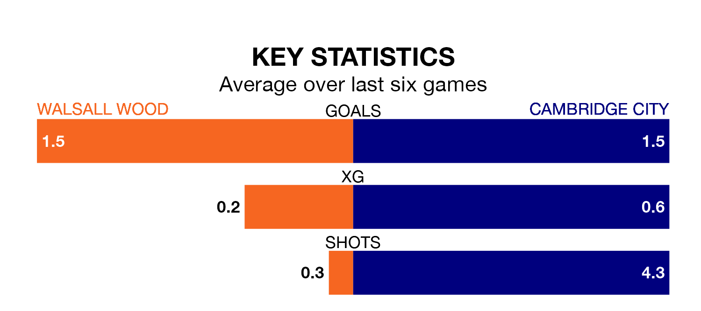

Walsall Wood host Cambridge City on Saturday in Northern Premier League Division One Midlands.
In their last league match, on Tuesday, Walsall Wood beat Shepshed Dynamo 2-1 at home.
Cambridge also won, 4-3 at home against Coleshill Town on January 20.
Cambridge are 16th in the table after 24 games, of which they have won six and drawn five, earning 23 points.
Walsall Wood are six places ahead of City in 10th, with 10 wins and four draws putting them on 34 points.
With 29 goals in 24 games so far this season, the away side are scoring at below the league average rate with 1.2 goals per game. And they are conceding more than average, letting in 41 goals at a rate of 1.7 per game.
The hosts, meanwhile, are above average scorers, with 1.7 goals per game, compared to a league average of 1.5. They have conceded 1.5 goals per game.
Walsall Wood are in reasonable form in Northern Premier League Division One Midlands, with three wins and two draws from their last six games.
With two wins and a draw over that period, Cambridge's form is worse – they have taken seven points from 18, compared to Walsall Wood's 11.
Updated: 08:51 (UTC), 25/01/24